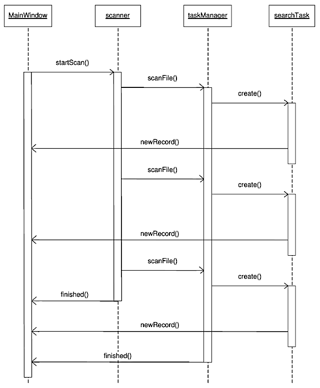
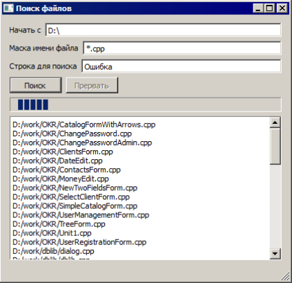
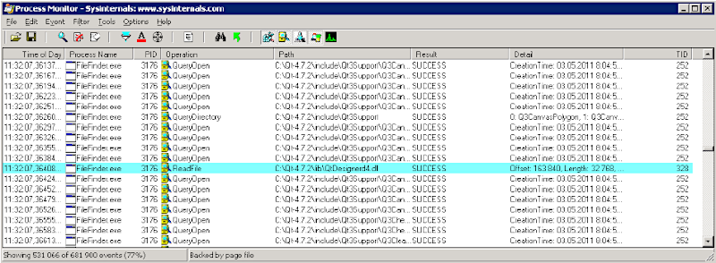
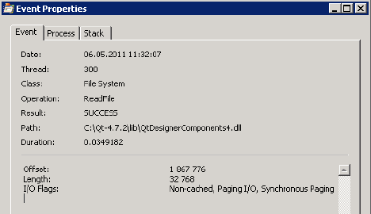
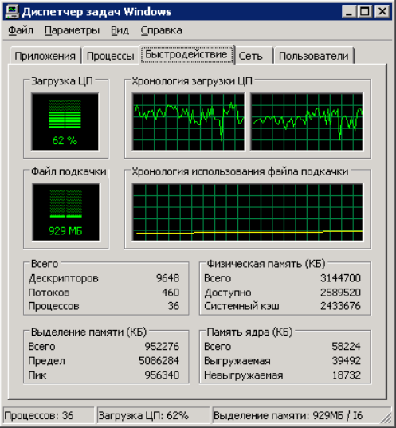

Возможно, вы удивитесь, если узнаете, что, все, чем мы занимались до сих пор, представляет собой работу с потоками на низком уровне. Но в терминологии Qt это так и есть. Начиная с версии Qt 4.4, у библиотеки появился другой интерфейс, призванный упростить работу с потоками. Этот интерфейс сосредоточен в пространстве имен QtConcurrent. Он также включает в себя классы QRunnable и QThreadPool . Новый интерфейс преследует две задачи: упростить работу с потоками, когда все, что нам нужно, — выполнить в дополнительном потоке одну функцию (это одна из тех задач, которые мы решили в классе ExtThread ). Вторая задача, которую стремится решить новый интерфейс, — упростить управление множеством потоков программы. Как я уже говорил, большое количество потоков не всегда ускоряет работу программы. Необходимость синхронизации данных между потоками — это лишь одна из проблем. Другая проблема — довольно высокая стоимость (в терминах машинного времени) создания нового потока. Именно эта проблема выходит на передний план в таких приложениях, как серверы, которые обрабатывают множество запросов разных клиентов и не сохраняют информацию о клиентах между запросами (stateless servers).
Одно из популярных ныне решений этой проблемы — разделение физических и логических потоков. Идея заключается в том, что, когда приложению требуется много потоков, среда, в которой выполняется приложение, создает ограниченное количество "физических потоков", т. е. потоков, которые воспринимаются как таковые на уровне операционной системы. Далее "логические потоки", которые создает программа, распределяются между физическими потоками наиболее оптимальным (с точки зрения среды выполнения) образом. То есть один физический поток может выполнять несколько логических потоков. Самый существенный выигрыш при этом достигается благодаря тому, что создание и уничтожение логического потока (который настоящим потоком не является) обходится системе гораздо дешевле, чем создание физического потока.
Классы QRunnable и QThreadPool
Класс QRunnable предназначен для выполнения непродолжительных (в терминах машинного времени) процедур. Так же как и в случае QThread , для того чтобы создать процедуру, выполнимую с помощью QRunnable, необходимо создать класспотомок этого класса и перекрыть в нем метод run() . Разница между QThread и QRunnable заключается в том, что класс QRunnable не создает поток, а просто инкапсулирует фрагмент кода, который необходимо выполнить. Класс QRunnable не является потомком QObject . Этот класс не может отправлять или получать сигналы и не может обрабатывать события (но может посылать события другим классам). Можно сказать, что класс QRunnable представляет собой максимально легкую обертку вокруг фрагмента кода, который нужно выполнить в отдельном потоке. Выполнение этих фрагментов кода осуществляется с помощью объектов класса QThreadPool . Если пользоваться введенной выше терминологией логических и физических потоков, можно сказать, что QRunnable создает логические потоки, а QThreadPool распределяет их между физическими потоками.
В теории класс QThreadPool должен полностью скрыть от нас низкоуровневую реализацию потоков и обеспечить оптимальное распределение нагрузки между потоками. На практике это не всегда удается. Тем не менее класс QThreadPool заслуживает подробного обсуждения. Для того чтобы поставить объект класса QRunnable в очередь на выполнение, необходимо вызвать метод start() класса QThreadPool. Если в распоряжении QThreadPool есть свободные потоки, то метод QRunnable::run() будет выполнен немедленно. Если свободных потоков нет, объект-потомок QRunnable будет добавлен в очередь, и соответствующий метод будет выполнен позже. Метод start() принимает два параметра: указатель на объект класса QRunnable и численный приоритет, согласно которому будет определен порядок этого объекта в очереди, если его придется туда добавлять.
Важно понимать, что объект QThreadPool полностью берет на себя управление переданным ему объектом класса-потомка QRunnable . По умолчанию QThreadPool автоматически уничтожает этот объект, когда его метод run() завершит работу, так что мы можем не заботиться об этом. Но это означает также, что мы не должны обращаться к объекту, переданному под управление QThreadPool , напрямую.
Сколько физических потоков создает объект QThreadPool ? Вообще говоря, количеством потоков можно управлять с помощью свойства maxThreadCount объекта QThreadPool . По умолчанию это свойство имеет значение, равное значению, возвращаемому методом QThread::idealThreadCount() . Если вы думаете, что "идеальное" количество потоков вычисляется методом idealThreadCount() по какому-то сложному алгоритму, то ошибаетесь. Обычно возвращаемое методом значение равно количеству ядер процессора системы (физических или виртуальных). Самый простой и верный способ изменить количество потоков, доступных объекту QThreadPool — использовать методы reserveThread() и releaseThread() . Метод reserveThread() сообщает объекту QThreadPool , что мы хотим использовать один поток за пределами этого объекта, и поэтому объект должен уменьшить количество используемых потоков. Метод releaseThread() "возвращает" поток объекту QThreadPool , т. е. попросту сообщает объекту, что он может снова увеличить количество используемых потоков.
Объект класса QThreadPool не держит потоки в рабочем состоянии постоянно. Если у объекта QThreadPool нет ожидающих обработки объектов QRunnable , то через некоторое время (определяемое свойством expiryTimeout ) потоки просто завершатся. Потоки будут созданы вновь, как только у объекта класса QThreadPool появится работа.
Из всего сказанного о классе QThreadPool следует, что в программе должен быть только один объект этого класса. Создавать объекты QThreadPool с помощью оператора new можно, но не нужно. Статический метод globalInstance() класса QThreadPool возвращает указатель на единственный, требуемый программе объект QThreadPool.
Что выбрать: QRunnable или ExtThread?
Как вы помните, класс ExtThread был предложен мной для того, чтобы уйти от модели событий в процедуре потока. Класс QRunnable позволяет решить ту же задачу, в связи с чем возникает вопрос, какой из классов лучше использовать в той или иной ситуации. QRunnable — очень "легкий" класс. Сам по себе он не создает никакого потока, но его можно встроить в существующий поток с помощью менеджера потоков, распределяя нагрузку между потоками. Когда объект QRunnable завершит свою работу, он может быть автоматически удален менеджером потоков. Эти достоинства QRunnable делают его оптимальным решением для ситуации, когда программе приходится выполнять множество сравнительно коротких процедур. Но у "легкого" QRunnable есть и недостатки. Поскольку этот класс не является потомком QObject , из него нельзя эмитировать сигналы. Если мы хотим, чтобы объект QRunnable обменивался сообщениями с другими объектами, нам придется делать это либо с помощью событий, либо с помощью специальных "многопоточных" структур данных (как это сделано в нашем примере). Мы вообще можем потерять все преимущества QRunnable , если попытаемся "утяжелить" его такими же средствами, как потомки класса QThread. В общем, можно сказать, что QRunnable лучше подходит для выполнения сравнительно простых и коротких операций, тогда как для длительных и сложных операций лучше воспользоваться потомками класса QThread.
ПРИМЕЧАНИЕ
А зачем вообще использовать QRunnable для простых и коротких операций? Не лучше ли разместить их в главном потоке приложения? Это зависит от количества простых и коротких операций, которые приходится выполнять. Если таких операций очень много, как, например, у сервера, обслуживающего множество клиентов, их лучше разместить в дополнительных потоках.
Еще одна проблема, связанная с использованием QRunnable и QThreadPool , — отсутствие стандартных средств досрочного завершения потока. Может показаться, что это не очень важно, поскольку объектам QRunnable обычно "поручаются" короткие процедуры, тем не менее проблема может возникнуть, если объектов QRunnable создано очень много, т. е. гораздо больше, чем выполняющих их физических потоков. В этом случае объект QThreadPool ставит поступающие объекты QRunnable в очередь и потоки не завершатся до тех пор, пока эта очередь не опустеет. У нас же нет ни возможности получить доступ к этим потокам, ни возможности принудительно опустошить очередь QThreadPool.
У этой проблемы есть несколько решений. Можно вместо метода start() пользоваться методом tryStart(), и, если метод возвращает false , т. е. если объект QRunnable не может быть поставлен на выполнение немедленно, помещать этот объект в собственную очередь и затем периодически вызывать tryStart() для объектов из очереди. В этом случае очередь объектов QRunnable будет у нас под контролем, и мы сможем очистить ее при необходимости досрочного завершения. Другое решение (то, которым воспользовался я в своей демо-программе) заключается в том, чтобы объявить глобальную переменную, значение которой будут периодически проверять функции QRunnable.
Программа поиска файлов по содержимому
Для демонстрации возможностей классов QRunnable и QThreadPool мы рассмотрим программу, которая выполняет поиск файлов на компьютере по маске имени файла и по строке, содержащейся в этом файле. Исходные тексты программы вы найдете в папке Ch6/FileFinder на сайте http://symmetrica.net/qt47book/.
Помимо использования интерфейса программирования потоков высокого уровня, здесь мы затронем также некоторые другие полезные темы, а именно алгоритм Бойера—Мура для быстрого поиска в тексте и метод быстрой работы с файлами с помощью отображения их в память.
Структура программы FileFinder довольно сложна (рис. 6.1).

Рис. 6.1. Последовательность действий в программе FileFinder
Поиск файлов с именем, соответствующим заданной маске, выполняет объект scanner класса FSScan. По сути, этот класс представляет собой модифицированный класс FileFinder из программы extthreads, рассмотренной в главе 5. Иначе говоря, поиск файлов с подходящим именем выполняется объектом класса-потомка класса ExtThread . Когда такой файл найден, поток эмитирует сигнал scanFile() , предназначенный для объекта taskManager класса TaskManager. Этот класс управляет объектом класса QThreadPool , а также объектами класса SearchTask , которые являются потомками класса QRunnable .
Разумеется, необходимо определить, каким образом объекты SearchTask будут сообщать другим объектам о результатах своей работы. Как уже говорилось, эмитировать сигналы эти объекты не могут. Вместо этого мы воспользуемся безблокировочной очередью LLFIFO, в которую объекты SearchTask будут помещать свои сообщения, а заинтересованные объекты — считывать их. Как мы помним, при работе с безблокировочной очередью мы можем использовать два разных типа пулов записей — локальный и глобальный. Поскольку объекты SearchTask уничтожаются сразу после завершения своей задачи, локальный пул записей нам не подходит. Мы используем глобальный пул, который создаем в объекте класса TaskManager . Этот глобальный пул (переменная records ) представляет собой массив записей, в котором объекты SearchTask ищут незанятую запись и помещают эту запись в очередь.
Слот класса TaskManager::newTask() (листинг 6.1) вызывается в ответ на сигнал scanFile() , посылаемый потокам scanner . В качестве параметра этот сигнал передает имя найденного файла.
Листинг 6.1. Слот newTask()
void TaskManager::newTask(QString fileName)
{
globalStop = false;
SearchTask * st = new SearchTask(fileName,
m_pattern,
SearchTask::Local8Bit|SearchTask::UTF8,
records,
MaxRecordsPool,
fifo);
threadPool->start(st);
}
Переменная globalStop используется для того, чтобы быстро завершить потоки объекта QThreadPool , если пользователь прерывает поиск или программа завершает свою работу. В этом случае переменной присваивается значение true. Каждый раз, когда мы создаем новую задачу для поиска, мы, на всякий случай, присваиваем этой переменной значение false.
В конструкторе объекта SearchTask мы передаем объекту полное имя файла, в котором следует искать строку, строку для поиска, набор флагов, определяющих, в каких кодировках следует выполнять поиск (программа FileFinder поддерживает поиск в локальной восьмибитной кодировке и в кодировке UTF-8), массив records , который содержит глобальный пул записей для очереди fifo , количество элементов в этом массиве и указатель на безблокировочную очередь, в которую объект SearchTask должен помещать свои сообщения.
Переменная threadPool содержит указатель на глобальный объект класса QThreadPool . Эта переменная инициализируется строкой
threadPool = QThreadPool::globalInstance();
и нужна, в основном, для удобства, чтобы нам не приходилось вызывать статический метод QThreadPool::globalInstance() всякий раз, когда потребуется обратиться к объекту QThreadPool .
Еще один интересный метод класса TaskManager — метод waitForFinish() . Этот метод приостанавливает вызвавшую его процедуру до тех пор, пока потоки, управляемые объектом QThreadPool , не завершат свою работу. Проблема в том, что, в отличие от объектов QThread , объект QThreadPool не посылает никаких сигналов, информирующих другие потоки о том, что его потоки завершились. У класса QThreadPool есть только блокирующий метод waitForDone() , который позволяет дождаться завершения потоков. Нам же нужен асинхронный способ получения той же информации. Будем надеяться, что в следующих версиях разработчики Qt решат эту проблему, а пока прибегнем к хитрости (листинг 6.2).
Листинг 6.2. Метод waitForFinish()
void TaskManager::waitForFinish()
{
while (threadPool->activeThreadCount() > 0)
QApplication::processEvents();
}
Этот метод просто ждет, пока количество работающих потоков (возвращаемое методом activeThreadCount() ) не станет равно нулю. Внутри цикла вызывается метод обработки событий приложения, так что, хотя функция, вызвавшая waitForFinish() , будет приостановлена, главный поток приложения продолжит обработку событий, даже если приостановленная функция была вызвана в этом потоке.
Теперь подробно рассмотрим класс SearchTask, поскольку он является, пожалуй, самым интересным классом программы FileFinder (листинг 6.3).
Листинг 6.3. Класс SearchTask
class SearchTask : public QRunnable
{
public:
enum Encoding {
Local8Bit = 0x0001,
UTF8 = 0x0002
};
Q_DECLARE_FLAGS(Encodings, Encoding)
explicit SearchTask(const QString &aFileName,
const QString &aPattern,
SearchTask::Encodings encodings,
LLRecord * records,
int recCount,
LLFIFO * aFIFO);
void run();
private:
QString fileName;
QString pattern;
LLRecord * recordPool;
LLFIFO * fifo;
int recordsCount;
bool doUtf8;
bool doLocal8Bit;
void newRecord(const QString &fileName);
};
Q_DECLARE_OPERATORS_FOR_FLAGS(SearchTask::Encodings)
Одна из особенностей класса, на которые я сразу хотел бы обратить ваше внимание, — объявление флагов, указывающих тип кодировки. На первый взгляд тут нет никаких неясностей. Тип Encoding — обычный перечислимый тип C++, который, во избежание конфликта имен, определен внутри класса, как это принято в Qt. Однако в конструкторе класса SearchTask мы хотим передавать не только отдельные элементы типа Encoding , но и их комбинации, объединенные с помощью оператора | . Можно, конечно, пойти простым путем и объявить:
typedef int Encodings;
Но в Qt принято поступать иначе. Макрос Q_DECLARE_FLAGS(Encodings, Encoding) создает тип Encodings (набор значений типа Encoding ) на основе типа Encoding. Фактически этот макрос делает следующее объявление:
typedef QFlags<Encoding> Encodings;
где QFlags — шаблон класса, предназначенный для работы с флагами типапараметра. Теперь у нас есть тип Encodings , объявленный, как принято в Qt. Но этого недостаточно. Для того чтобы новый тип мог работать, необходимо перегрузить операторы QFlags , такие как |=. К счастью, нам не придется делать это самим. Всю необходимую работу выполнит макрос Q_DECLARE_OPERATORS_FOR_FLAGS().
ПРИМЕЧАНИЕ
В чем преимущество такого способа определения типа Encodings перед более простым определением на основе int? Оно состоит в том, что мы получаем действительно уникальный тип для наших флагов, который не преобразуется автоматически в тип int и не запутает программиста.
Быстрый доступ к содержимому файла
Стандартные функции доступа к дисковым файлам не являются самыми быстрыми средствами доступа. Это относится ко всем операционным системам, т. к. следование давно утвержденному стандарту создает одинаковые проблемы для всех ОС. По мере развития современных операционных систем широкое применение нашла концепция виртуальной памяти, а вместе с ней и концепция отображения файлов в память процесса. Отображение файлов в память процесса позволяет достичь значительного выигрыша в производительности по сравнению со стандартными функциями read() и write() и их аналогами.
Чтобы понять преимущества отображения файлов в память, нужно схематично представить себе, что происходит, когда данные из файла читаются стандартной функцией. Детали этого процесса различаются в разных операционных системах, но в основных чертах они схожи. Когда функция read() направляет системе запрос на чтение файла, данные считываются с диска, обычно в большем количестве, чем запросила функция, и сохраняются в кэше операционной системы. Функция read() не имеет прямого доступа к кэшу. Обычно функции передается указатель на программный буфер — некоторую область памяти, выделенную в программе для данных файла. Операционная система должна скопировать данные из кэша в эту область. При отображении файла в память система не копирует данные в область, которую указываем ей мы, а отображает адреса своих внутренних буферов в адресное пространство нашего процесса. В результате мы "выигрываем" одну операцию копирования данных, а если программа обрабатывает множество файлов, как это делает программа поиска, то этот выигрыш может оказаться весьма заметным. Кроме того, отсутствие кэширования при отображении файлов в память может ускорить работу с большими файлами.
Выигрыш в быстродействии может быть достигнут также за счет того, что при обращении к файлу, отображенному в память процесса, системе не приходится поддерживать некоторые внутренние структуры, определяющие состояние доступа, которые необходимы при использовании стандартных интерфейсов.
Хотя, в принципе, даже очень большой файл можно отобразить в память процесса целиком, обычно это не делается, поскольку отображение в память очень большого объема данных создает слишком большую нагрузку на менеджер виртуальной памяти. Вместо этого файл отображается в память процесса по частям, по мере необходимости. Допустим теперь, что программа нашла искомую строку в начале большого файла. В этом случае задача поиска в данном файле завершится (нам ведь важен факт наличия хотя бы одного вхождения строки в файл). Поскольку файл не кэшировался, с диска были прочитаны только те фрагменты, с которыми мы работали, а значит, количество обращений к диску было меньше, чем при использовании стандартных функций. Может возникнуть вопрос: а не обернется ли выигрыш, достигнутый при работе с большими файлами благодаря отсутствию кэширования, проигрышем при работе с небольшими файлами. На это мы ответим, что, поскольку кэширование на уровне системы отсутствует, мы можем позаботиться о нем сами и будем просто отображать небольшие файлы в память целиком. Что бы там ни происходило в системе на низком уровне, операция чтения файла, отображенного в память целиком, не может занять больше времени, чем операция чтения того же файла при включенном кэше. Осталось только ответить на вопрос, где проходит граница между "небольшими" и "большими" файлами. Ответ на этот вопрос нуждается в отдельном исследовании и в любом случае зависит от параметров конкретной системы.
ПРИМЕЧАНИЕ
Если несколько процессов отображают в свое адресное пространство одну и ту же область одного и того же файла, то данные, записанные в этот файл одной программой, будут видимы другой программе еще до сохранения их на диске. Эта особенность файлов, отображенных в память, иногда используется для организации быстрого обмена данными между программами.
Из сказанного выше не стоит делать вывод, что стандартные интерфейсы работы с файлами устарели и больше не нужны. Во-первых, не всем программам требуется так интенсивно работать с файлами, как программе поиска. Во-вторых, идея, лежащая в основе стандартных интерфейсов (данные помещаются туда, куда нужно нам, а не туда, где это удобно операционной системе) часто бывает очень полезной. В-третьих, сила стандартных интерфейсов заключается в их способности к абстракции. Стандартные интерфейсы доступа к файлам позволяют представить в виде файлов что угодно — файл на диске, сетевой канал обмена данными, устройство, передающее данные в компьютер с помощью интерфейса USB, и многое другое. Интерфейс отображения файлов в память появился в Qt, начиная с версии 4.4. Этот интерфейс невероятно прост. У класса QFile появились методы map() и unmap() . После того как файл открыт с помощью класса объекта класса QFile , его содержимое (или часть этого содержимого) можно отобразить в память процесса с помощью метода map(). Первый аргумент этого метода — смещение отображаемой области относительно начала файла. Второй аргумент — размер отображаемой области. Если отображение выполнено, метод возвращает указатель на начало области адресного пространства процесса, в которую выполнено отображение. В противном случае возвращается 0. Для того чтобы удалить отображение, мы вызываем метод unmap() , которому в качестве параметра передается адрес области отображения.
ПРИМЕЧАНИЕ
В UNIX-системах широко распространены специальные типы файлов, которым не соответствует никакая область диска (такие файлы можно найти, например, в директориях /dev/ и /proc/). Некоторые из этих файлов можно отобразить в память процесса (как, например, файл /dev/zero), но для большинства из них сделать это не удастся. В программе FlieFinder чтение файлов выполняет процедура run() класса SearchTask (листинг 6.4).
Листинг 6.4. Процедура run() класса SearchTask
void SearchTask::run()
{
if (globalStop)
return;
QFile file(fileName);
file.open(QIODevice::ReadOnly);
qint64 size = file.size();
int minLen = pattern.toLocal8Bit().length();
int utf8Len = pattern.toUtf8().length();
if (size < minLen)
return;
BMSearcher searcher((unsigned char*) pattern.toLocal8Bit().data(),
minLen);
BMSearcher utf8Searcher((unsigned char*) pattern.toUtf8().data(),
utf8Len);
if ((minLen == utf8Len) && (doLocal8Bit)) {
if (!strncmp(pattern.toLocal8Bit().data(),
pattern.toUtf8().data(), minLen))
doUtf8 = false;
}
qint64 offset = 0;
uchar * text;
while (offset < size — minLen + 1) {
if (globalStop)
return;
qint64 tlen = MSize < size — offset ? MSize : size — offset;
text = file.map(offset, tlen);
if (!text)
return;
if (searcher.containsPattern(text, tlen)) {
newRecord(fileName);
return;
}
if (doUtf8) {
if (utf8Searcher.containsPattern(text, tlen)) {
newRecord(fileName);
return;
}
}
file.unmap(text);
if (utf8Len <= tlen)
offset = offset + tlen — utf8Len + 1;
else
offset = offset + tlen — minLen + 1;
}
}
Максимальный размер отображаемого блока определяется полем MSize , значение которого в программе соответствует 2 мегабайтам. Если размер файла меньше MSize , файл отображается в память процесса целиком, иначе — частями. Обратите внимание, что при чтении файла частями нам приходится считывать эти части с незначительным перекрытием (иначе мы можем пропустить вхождение строки, если оно находится на стыке двух частей). В этом интерфейс отображения файлов в память тоже гораздо удобнее, чем стандартный интерфейс.
Обратите внимание, что поиск в кодировке UTF-8 выполняется только тогда, когда это имеет смысл. С точки зрения используемого алгоритма при поиске в разных кодировках отличается только кодировка искомого образца. Но в случае, если искомая строка содержит только базовые символы латиницы, текст этой строки в кодировке UTF-8 будет совпадать с текстом в локальной восьмибитной кодировке. В этом случае отдельный поиск строки в кодировке UTF-8 можно не выполнять, и мы его не выполняем.
Если строка в файле найдена, мы помещаем в очередь fifo сообщение с именем файла. Это делает метод newRecord (листинг 6.5).
Листинг 6.5. Метод newRecord
void SearchTask::newRecord(const QString &fileName)
{
int i = 0;
while (!recordPool[i].BelongsTo.testAndSetOrdered(0, 1))
i = (i+1)%recordsCount;
int l = fileName.toLocal8Bit().size();
l = l < 255 ? l : 254;
strncpy(recordPool[i].message, fileName.toLocal8Bit().data(), l);
recordPool[i].message[l] = '\0';
fifo->fetch(&recordPool[i]);
}
Для передачи имен файлов используется локальная восьмибитная кодировка. Эта кодировка самая компактная, так что полное имя файла в ней, скорее всего, уложится в выделенные 256 байт. Имена большинства файлов в вашей системе без проблем отобразятся в локальной восьмибитной кодировке, хотя возможны и исключения.
Обратите внимание, что теперь для пометки записи как используемой, мы применяем поле типа QAtomicInt (а не bool ). Вызвано это тем, что пул сообщений теперь разделяется между несколькими потоками, а значит несколько потоков могут пытаться пометить одну и ту же запись.
Данные из очереди считываются в главном классе приложения с помощью таймера (листинг 6.6).
Листинг 6.6. Метод timerEvent()
void MainWindow::timerEvent(QTimerEvent *event)
{
while (!taskManager->getFIFO()->empty()) {
LLRecord * record = taskManager->getFIFO()->unfetch();
QString str = QString::fromLocal8Bit(record->message);
taskManager->getFIFO()->release(record);
ui->textBrowser->append(str);
}
event->accept();
}
Быстрый поиск строк
Поиск вхождений строки в файле выполняется с помощью алгоритма Бойера— Мура. Все, что касается этого алгоритма, инкапсулировано в отдельный класс BMSearcher (листинг 6.7)
Листинг 6.7. Класс BMSearcher
class BMSearcher
{
public:
BMSearcher(unsigned char * pattern, int length);
bool containsPattern(unsigned char * text, int len);
private:
void makeTable();
int skipTable[256];
int patternLength;
unsigned char mpattern[256];
};
В конструкторе классу передается строка для поиска (переменная pattern ).
ПРИМЕЧАНИЕ
Строка pattern, как и текст, в котором выполняется поиск, приводится к типу "массив элементов unsigned char". Поскольку наш класс создан для поиска в тексте в различных кодировках, мы не можем полагаться на символ \0, как на маркер конца строки, поэтому вместе с массивом unsigned char мы передаем значение, указывающее длину массива.
Метод containsPattern() возвращает true, если массив text содержит искомую строку, и false в противном случае. Алгоритм Бойера—Мура позволяет выполнять поиск вхождений строки в тексте существенно быстрее, чем алгоритм "грубой силы", т. к. при использовании этого алгоритма нет необходимости сравнивать каждый символ текста с начальным символом строки. Те, кого интересуют подробности, могут почитать мою статью об алгоритме Бойера—Мура "Алгоритмы поиска в тексте" (http://symmetrica.net/algorithms/bm1.htm). Из этой статьи вы узнаете, между прочим, что использованный в примере FileFinder вариант алгоритма не является самым быстродействующим и не позволяет реализовать некоторые дополнительные полезные возможности, такие как поиск без учета регистра. Вы, если хотите, можете доработать программу FileFinder, реализовав более совершенный вариант алгоритма Бойера—Мура, тогда у вас появится программа, способная конкурировать с "настоящими" поисковыми программами, которые входят в состав операционных систем. Не вдаваясь в принцип работы алгоритма Бойера—Мура, отметим одну неочевидную особенность этого алгоритма. Алгоритм работает тем быстрее, чем длиннее искомая строка.
Теперь мы можем посмотреть на работающее приложение (рис. 6.2).
Увидеть, что программа работает, конечно, хорошо, но когда речь идет о многопоточном приложении, вполне естественно желание заглянуть глубже, и увидеть, как многопоточность реализуется на практике.

Рис. 6.2. Программа FileFinder в работе
На платформе Windows для этого можно воспользоваться утилитой Process Monitor, написанной Марком Руссиновичем и доступной на сайте Microsoft (http:// technet.microsoft.com/ru-ru/sysinternals/bb896645). Программа Process Monitor (рис. 6.3) позволяет получить множество информации о выполняющихся в системе процессах, в том числе о вызовах системных функций процессами с указанием аргументов, идентификаторов потоков, вызвавших функции, и т. п. Программа удобна еще и тем, что позволяет отфильтровать огромный объем поступающей информации по различным параметрам (например, по имени процесса). Выбрав интересующее нас событие, мы можем получить дополнительную информацию о нем (рис. 6.4).

Рис. 6.3. Программа Process Monitor отслеживает работу FileFinder

Рис. 6.4. Информация об операции ReadFile
Может показаться, что наша программа не способна продемонстрировать преимущества многопоточности в полную силу, т. к. ограничивающим фактором при работе программы является диск. Два потока не могут читать данные с одного диска одновременно (в данном случае имеется в виду настоящая, а не "кажущаяся" одновременность, к которой мы привыкли со времен распространения многозадачных ОС). Тем не менее в системе с двумя ядрами нам удалось довольно "справедливо" распределить нагрузку между ними обоими (рис. 6.5).

Рис. 6.5. Загрузка процессоров программой FileFinder
Что еще, помимо повышения производительности, дает нам использование потоков? Мы видим, что пользовательский интерфейс не "замерзает" во время работы программы, а результаты поиска в файлах начинают появляться до того, как будут отсканированы все файлы.
Функция QtConcurrent::run()
Функция run(), определенная в пространстве имен QtConcurrent , представляет собой интерфейс еще более высокого уровня, чем класс QThreadPool . Эта функция позволяет выполнить переданную ей функцию в отдельном потоке, совершенно не заботясь о потоках (всю заботу берет на себя глобальный объект QThreadPool , обращаться к которому напрямую не приходится). Для того чтобы использовать функцию QtConcurrent::run() в своей программе, вам нужно включить в текст программы заголовочный файл <QtConcurrentRun> .
Мы уже привыкли к тому, что функции, предназначенные для выполнения в отдельных потоках, имеют определенные ограничения. В частности такие функции не возвращают значений в основной поток. Причина этого очевидна. После вызова функции в отдельном потоке основной поток продолжает выполняться, и, если мы не примем специальных мер, основной поток не узнает о том, что функция в другом потоке завершилась и не сможет сохранить возвращенное ею значение. Интерфейс, связанный с функцией QtConcurrent::run() , решает проблему передачи возвращаемых значений (а также генерируемых функцией исключений) между потоками.
Рассмотрим простейший пример QtConcurrent::run() . Пусть у нас есть функция для вычисления чисел Фибоначчи (листинг 6.8).
Листинг 6.8. Функция fibonacci()
quint64 fibonacci(qint32 n)
{
if (n == 0)
return 0;
if (n == 1)
return 1;
quint64 a = 0;
quint64 b = 1;
for (qint32 i = 2; i <= n; i++) {
b = a + b;
a = b — a;
}
return b;
}
Для выполнения этой функции в отдельном потоке нам нужно определить некоторые структуры данных и вызвать функцию QtConcurrent::run() (листинг 6.9).
Листинг 6.9. Вызов функции fibonacci() в отдельном потоке
QFuture<quint64> future;
QFutureWatcher<quint64> watcher;
connect(&watcher, SIGNAL(finished()), this, SLOT(finished()));
watcher.setFuture(future);
qint32 n = 100;
future = QtConcurrent::run(fibonacci, n);
Шаблон класса с фантастическим названием QFuture предназначен для асинхронного получения результата функции, выполняемой в потоке, а также для получения других событий, возникающих во время выполнения потока. Название Future отражает, вероятно, тот факт, что интересные события происходят с объектом QFuture не в момент присваивания, а после него.
ПРИМЕЧАНИЕ
Функция QtConcurrent::run() — не единственный элемент пространства QtConcurrent, который использует объекты QFuture. При использовании других функций, подобных QtConcurrent::run(), объекты QFuture могут даже управлять выполнением соответствующего потока. Описание этих элементов можно найти в документации по Qt.
Объект future получит значение функции fibonacci() , когда оно будет возвращено, но ничего не сообщит нам об этом. Мы можем периодически опрашивать объект future , используя метод isFinished() . Можно также воспользоваться методом result() , но этот метод заблокирует вызывающий поток до тех пор, пока функция fibonacci() не вернет значение. Если мы хотим, чтобы об изменении состояния потока, в котором выполняется функция fibonacci() , нас извещали сигналы, следует воспользоваться шаблоном класса QFutureWatcher . Класс на основе этого шаблона объявляется так же, как и класс на основе QFuture — в качестве параметра указывается тип значения, возвращаемого функцией. Затем с помощью метода setFuture() мы передаем объекту QFutureWatcher ссылку на конкретный объект QFuture . Обратите внимание, что все это необходимо выполнить до вызова функции run() , иначе события, которые мы хотим отслеживать, могут произойти в промежутке между вызовом run() и настройкой QFutureWatcher . Если у функции, вызываемой с помощью run(), есть параметры, эти параметры указываются при вызове run() после имени самой вызываемой функции. По окончании выполнения функции объект QFutureWatcher эмитирует сигнал finished() . В обработчике этого сигнала мы можем воспользоваться методом result() объекта QFuture . Поскольку работа функции уже завершилась, метод result() не заблокирует вызывающий поток.
Помимо аргументов, механизм QtConcurrent может передавать в другие потоки возникшие в рабочем потоке исключения. Правда, возможно это только в том случае, если поток-приемник вызвал блокирующую функцию (например, QFuture::result() ) до появления исключения. Другими словами, для того чтобы "отловить" исключение в потоке QtConcurrent , поток-приемник должен приостановить свою работу до тех пор, пока поток QtConcurrent не завершится. Это, очевидно, сводит на нет преимущества использования потоков. В документации по Qt почему-то нет упоминания об этом факте.
Так что если в вашей функции потока может возникнуть ошибка, лучше продумать какой-то способ сообщить об этом главному потоку без использования исключений.